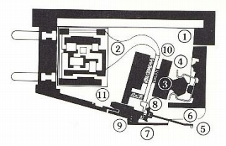
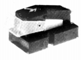
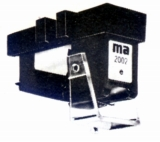

MICRO ACOUSTIC（ミクロ・アコースティック）
「ma」型と呼ぶ独自様式のカードリッジが紹介されていた、アメリカのブランド。「マイクロ・アコースティック」と表記する資料もあるようだ。故 長岡鉄男氏によれば、特殊なパッシブ型イコライザーを組み込んだ圧電型らしい。本国では1980年代まで活動していたようだが、日本では1970年代に姿を消した。当時の代理店は「エルタス」。

（内部構造。�Jの箇所がイコライザーのようだ）
�T.カートリッジ

(QDC-1S)
(2002-e)